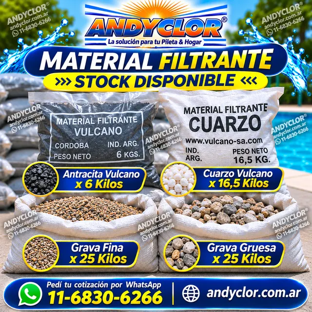
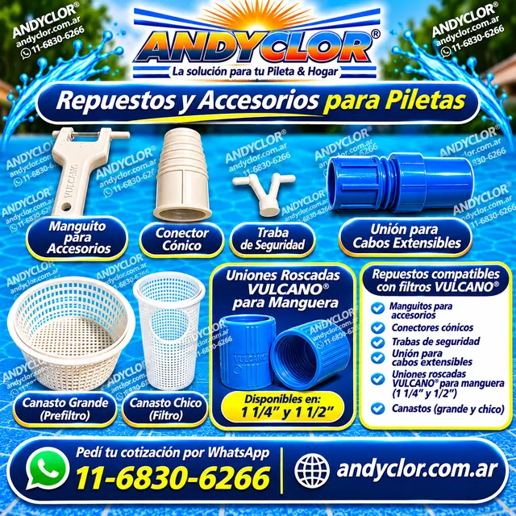
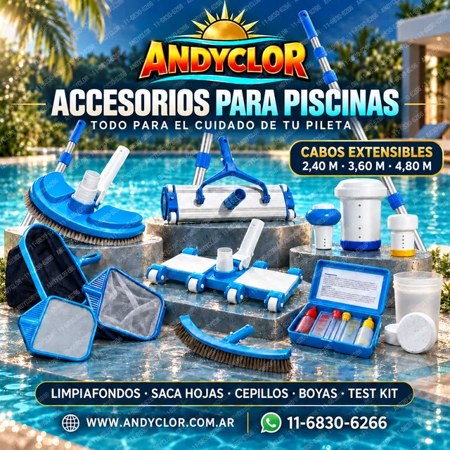
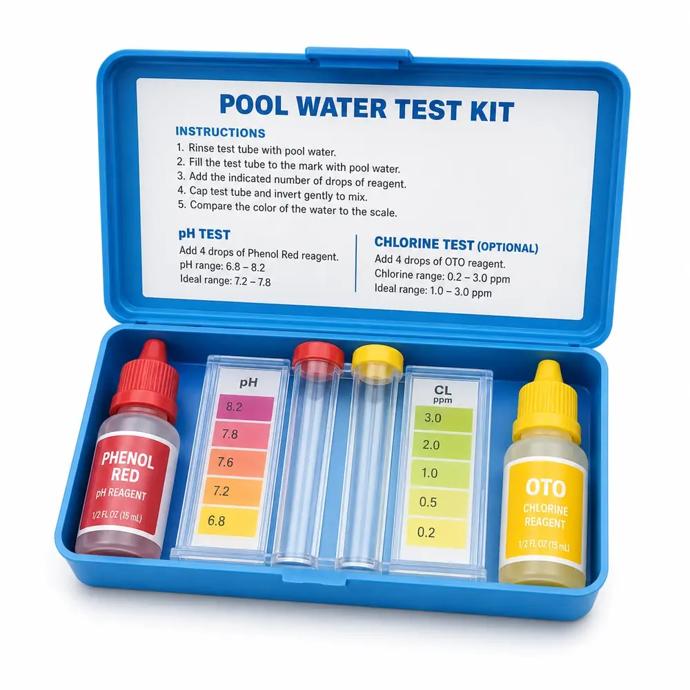

Limpiafondos o barrefondos
- Media luna
- 8 ruedas
- Aluminio 35 cm
- Aluminio 44,5 cm
Limpieza, repuestos y cargas filtrantes. Consultá modelos, medidas y disponibilidad.
Antracita, cuarzo y gravas para reposición de cargas filtrantes. La cantidad y la combinación se confirman según el equipo.
Indicá marca y modelo del filtro para cotizar la carga adecuada.
Consultar material filtrante
Piezas para reemplazo y mantenimiento. Uniones roscadas Vulcano para manguera disponibles en 1 1/4″ y 1 1/2″.
Enviá el modelo o una foto de la pieza para confirmar medida y compatibilidad.
Consultar repuestos

Limpiafondos o barrefondos, saca hojas, cepillos, boyas y cabos o mangos telescópicos. Consultá stock y disponibilidad por WhatsApp.

Medir antes de seguir agregando producto ayuda a evitar gasto innecesario y mejora el resultado del tratamiento.
Ideal para controlar pH y cloro antes de aplicar alguicida, clarificador o reguladores.
Consultar Test Kit